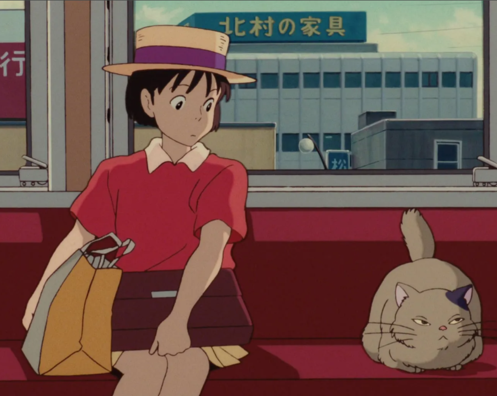

01⌘
Project title goes here
Write a couple of sentences about what it does, why you made it, and what you learned.
GitHub profile ↗HELLO THERE · WELCOME IN
I'm Tanya, a second-year computer science student with particular interest in backend development and building software.

ABOUT ME
I'm Tanya, a second-year computer science student.
THINGS I'VE MADE
A little shelf for experiments, coursework, and projects I'm proud of. I'll add proper write-ups as I go.
Write a couple of sentences about what it does, why you made it, and what you learned.
GitHub profile ↗Learning
Building
Small projects and web apps with Python, FastAPI, and React.
Considering
Installing Linux alongside Windows. The curiosity is real; the courage is loading…
THINGS I USE
A growing collection of languages and tools I've used or am learning.
THE CURRENT WORKSPACE
THE EXIT
Have a question, want to talk about a project, or just want to say hi? You can find me on GitHub.
GitHub